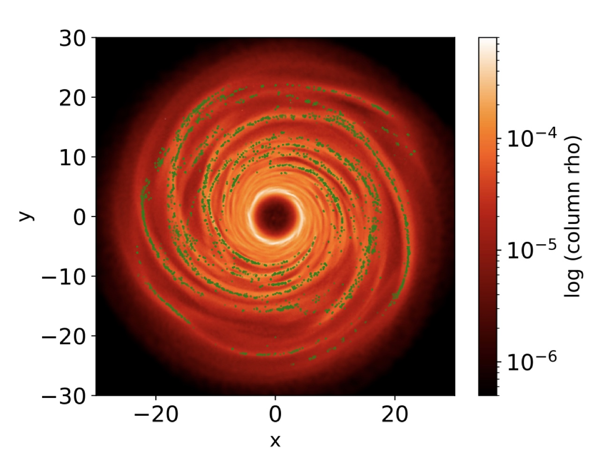
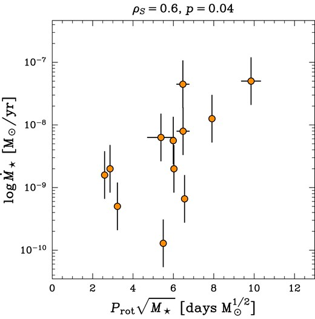
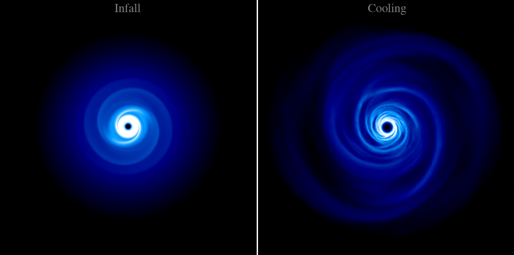
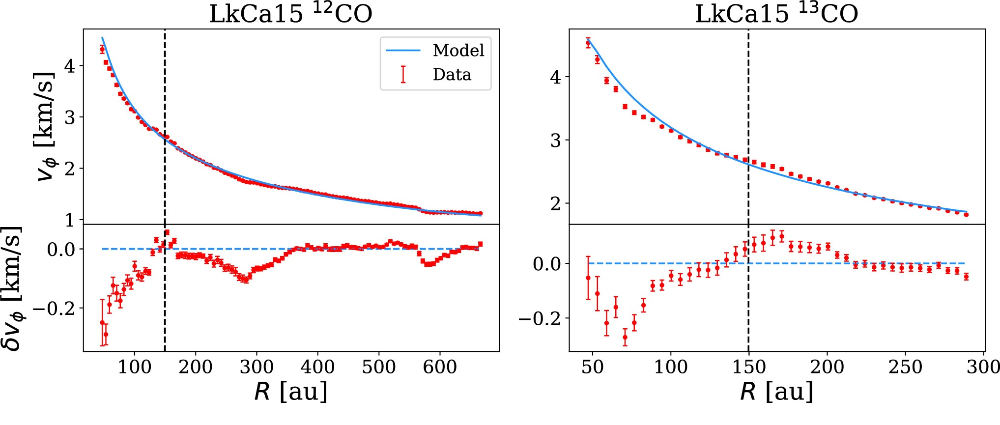
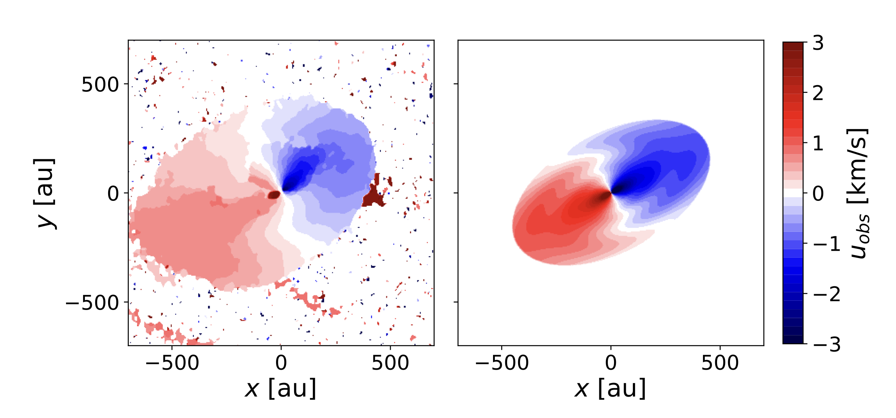

Homepage
Hi! I am a postdoctoral associate at the Institute of Astronomy, University of Cambridge. My research focuses on protoplanetary discs and planet formation, from a theoretical perspective. I am particularly interested in young protoplanetary discs, investigating the role of self-gravity and gravitational instability in the planet formation process.
Recent Work


Accretion bottleneck in protoplanetary discs


Infall-driven gravitational instability in accretion discs


exoALMA XII. Weighing and sizing exoALMA disks with rotation curve modelling

